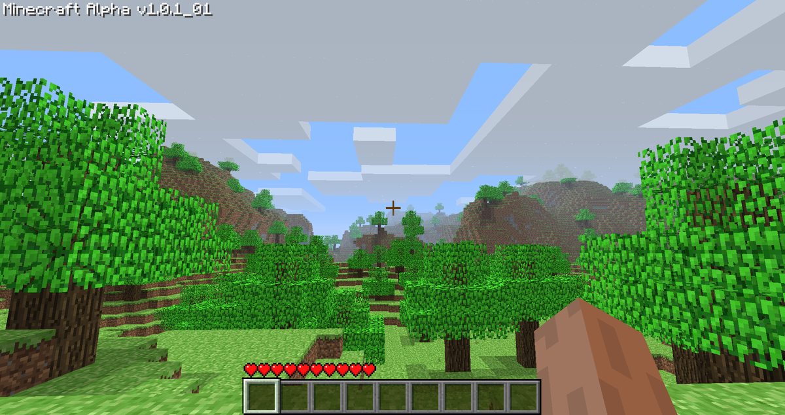

Alpha is the fifth phase in the development cycle of Minecraft, after Infdev. There was only one type of game mode playable in this version —Survival— and was the fourth Minecraft development stage to have some of its versions released to the public.During the Alpha phase, Minecraft was updated very frequently due to Notch working full-time on Minecraft since June 1, 2010, and having a small company made later (Mojang). Bug fixes and tweaks could happen throughout the week, appearing on the game's development blog, with major additions and changes appearing in 'Seecret' Friday updates, leaving the game's players to discover the included new features. On December 11, 2010, Notch announced that the game would enter the Beta stage of development on December 20, 2010, at which point the price would increase to €14.95.
 Back